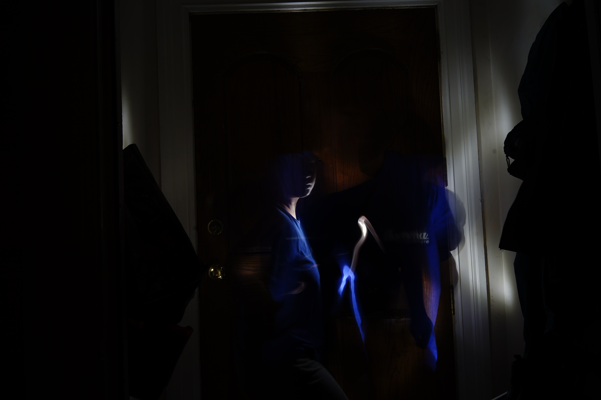

Thunderstruck
Director/Editor/Writer/Cinematographer
A pixelation stop-motion experimental film from 2800 long-exposure photos.
This short film is a re-enactment of Takashi Ito's Thunder, embedded with my own experiences.

Please contact me at beatricehhoang@gmail.com for access to this film.